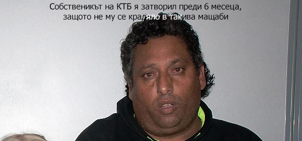

Депутатската клетва сработи: 240 с изсъхнали ръце или родили таралеж
АМИН, ЕГА, ЗАКЛЮЧ - Положената вчера от новата порция народни представители
клетва в името на Република България да спазват Конституцията, законите и да
действат в интерес на народа изненадващо сработи.
Само ден след изричането на фразата "Заклех се" всички 240 народни
представители са приети в болница с изсъхнали ръце или родили таралеж.
Към момента огромен дял от депутатите приличат на тиранозаври или на такива,
получили кунилингус от тиранозаври, предават наши източници от болницата,
пожелали да бъде спестено пресъздаването на смеха им.
"Това са спекулации. Не е сигурно, че клетвата е сработила, може в
Парламента да има някаква болест. Това е атентат срещу демокрацията" -
сподели виден политик, опитвайки се да краде в болничната си стая посредством
смукване с уста поради неработещ чифт горни крайници.
Предвижда се цяла седмица партийните врачки да се опитват да разтурят клетвите, щото лошо...
БНБ прехвърли КТБ на неграмотен циганин, отрече да знае какво е КТБ

БНБ - БНБ няма никаква идея за какво КТБ става дума,
никога не е чувала за КТБ и няма намерение да се
занимава със спекулации, каза управителят на
Централната банка Иван Искров по телефона, след което го изключи.
Вчера се разбра, че КТБ има по-голяма дупка от Жени Калканджиева и банката е
управлявана от клептоманка със склонност към хазарт, чийто надзор е бил в
ръцете на винаги напушен ленивец, а накрая никой от тия алчни дебили няма да влезе в затвора.
"Тия от Европа са галфони, БНБ няма нищо общо с КТБ, не знам какво искат и мрънкат.
Не ме занимавайте повече с глупости" - сподели Искров, все едно го питат за една от
онези яхти, приписани на неграмотни представители на ромското малцинство.
От доклад на квесторите в КТБ стана ясно, че контролът над банката е поет
от 34-годишният безработен Халил от Пазарджик, собственик на 100% от капитала
на банката и имащ завършен първи срок на трети клас.
"Фирмаджия съм, банкер. Не знам какво значи КТБ" - смотолеви Халил,
признавайки, че са му дали 35 лева, за да подпише едни документи и са му
харизали банката, която поискал да бъде затворена и да влязат квестори в нея,
защото не му се занимавало с по-крупни кражби, отколкото с тези, с които е свикнал.
Като нищо реалността е доста по-абсурдна от горния текст, отсъдиха хора,
следящи адекватността на различните страни по казуса КТБ.
Разпват Волен Сидеров, за да спасят българската нация
ул. ВРАБЧА №1 - Лидерът на ПП Атака Волен Сидеров обяви, че е силно вероятно
съвсем скоро да бъде разпнат, за да спаси българския народ.
"Ще стана изкупителна жертва за греховете на народа, който позволи да бъде
яхнат и използван за турско-юдео-масонските интереси на Антихриста-рептиl" -
изрази жертвоготовността си Сидеров, вярващ, че с нему Бог.
Лидерът на Атака обяви, че при готвените задкулисни коалиционни оргии само
Всевишния ще може да спаси българската нация, а цената за такъв акт ще бъде висока
и жертвеният агнец трябва да бъде истински ценен.
"Да, наскоро продадох на Николай Бареков марката върху Левски и Ботев, защото
се прицелих по-високо. Прицелих се в марката Бог" - споделя Сидеров в отговор на въпрос
защо е изоставил киченето с националистически символи в полза на по-трансцедентално обяснение
за политическия си имидж.
Беловласият Месия не уточни дали ще бъде разпнат идния петък или някой друг път, но
посланието му вдъхнови хиляди хора на средна възраст, обичащи да им се говори като на
фарфалаци, които си лягат да спят след Сънчо в 20.